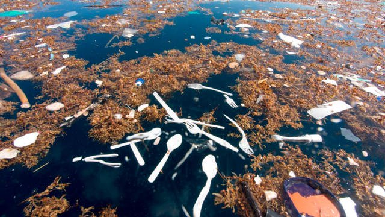
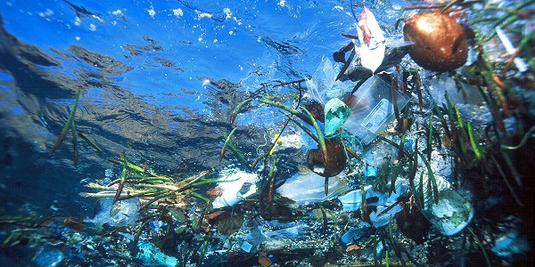
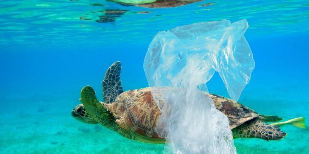
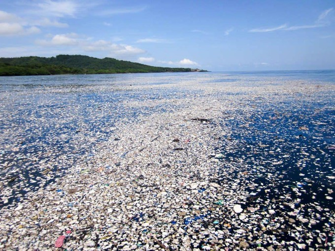
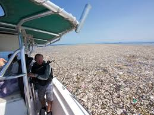
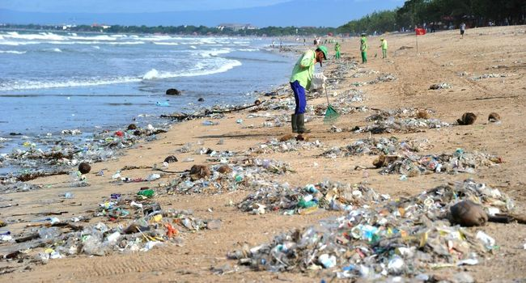
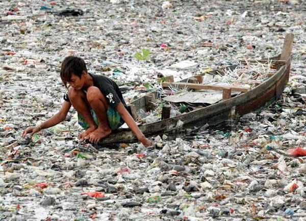
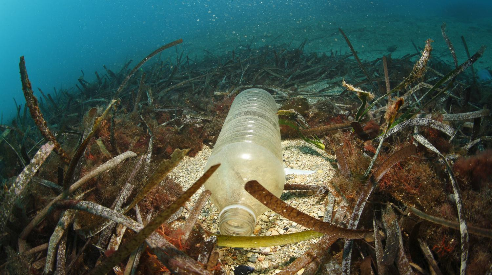
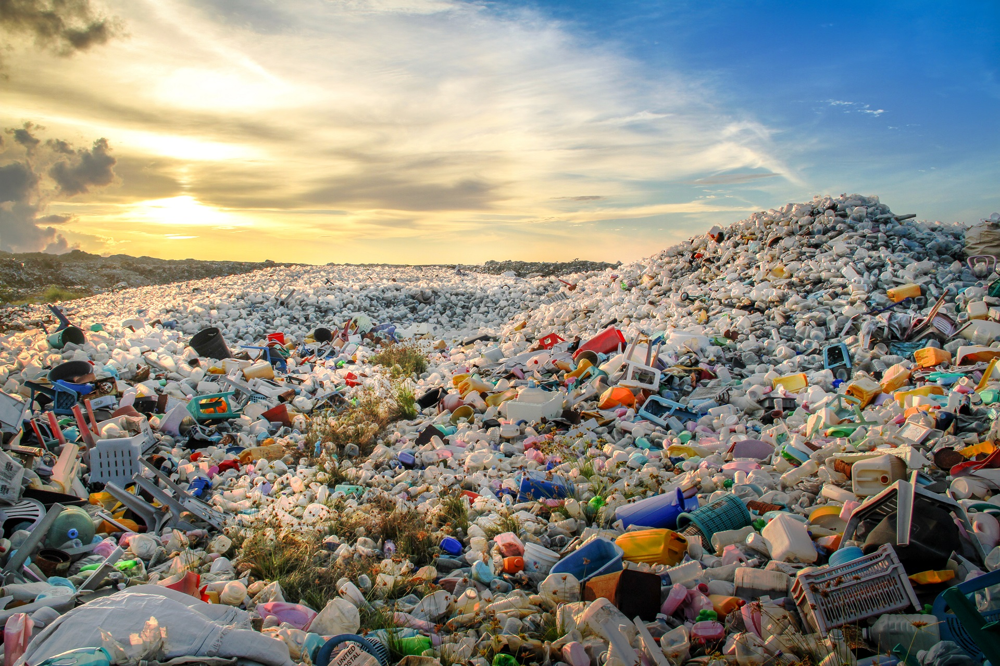
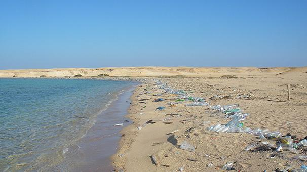

Les écogestes en mer
Les éco-gestes sont des gestes simples pour réduire son impact sur l’environnement. Tout le monde peut s’engager pour faire des éco-gestes, de manière simple et non-contraignante ! Que ce soit chez soi ou au bureau ou ailleurs, nous pouvons tous faire un geste pour la planète. A la plage aussi ! A ce propos, quelle plage privilégiée ? Le Pavillon bleu est attribué aux communes dont les plages des ports de plaisance respectent l'environnement, aussi bien l'eau, que les déchets et même l'aspect éducatif.
Quelques gestes...

- Utilisez des sacs lourds ou des paniers pour transporter vos affaires car un sac trop léger risque de s’envoler.
- Soyez attentif à tous les objets légers que le vent risque d’entrainer dans l’eau.
- Utilisez un cendrier de poche pour ne pas jeter de mégots par-dessus bord.
- Ramassez sur le littoral et dans l’eau les sacs plastiques qui sont un véritable fléau dans les océans.
- Equipez votre bateau de cuves à eaux noires et évitez d’utiliser vos toilettes marines au mouillage près des côtes.
- Utilisez des moteurs marqués dont les normes garantissent le respect de l’environnement.
- Remplissez prudemment le réservoir de carburant pour ne pas répandre d’hydrocarbures dans l’eau.
- Ne pêchez que ce qui est nécessaire à votre consommation familiale et immédiate.
- Respectez les interdictions de capture, de pêche ou de ramassage des espèces protégés.
Retour à l'acceuil